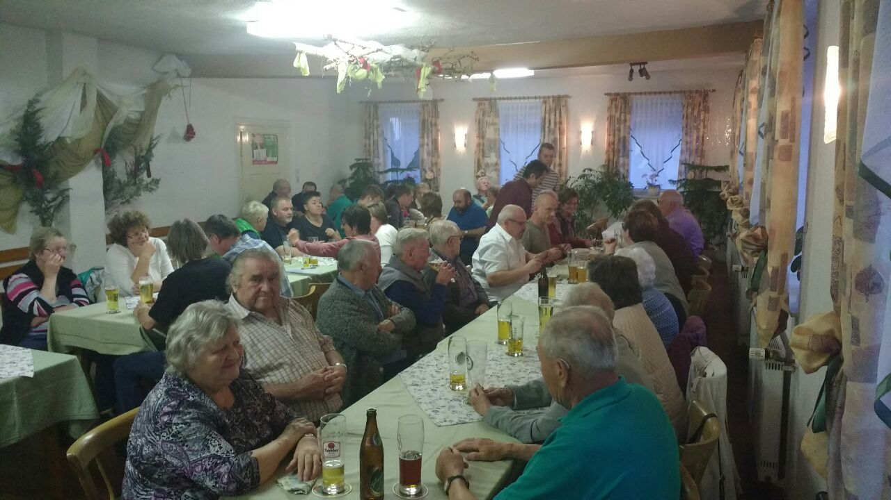
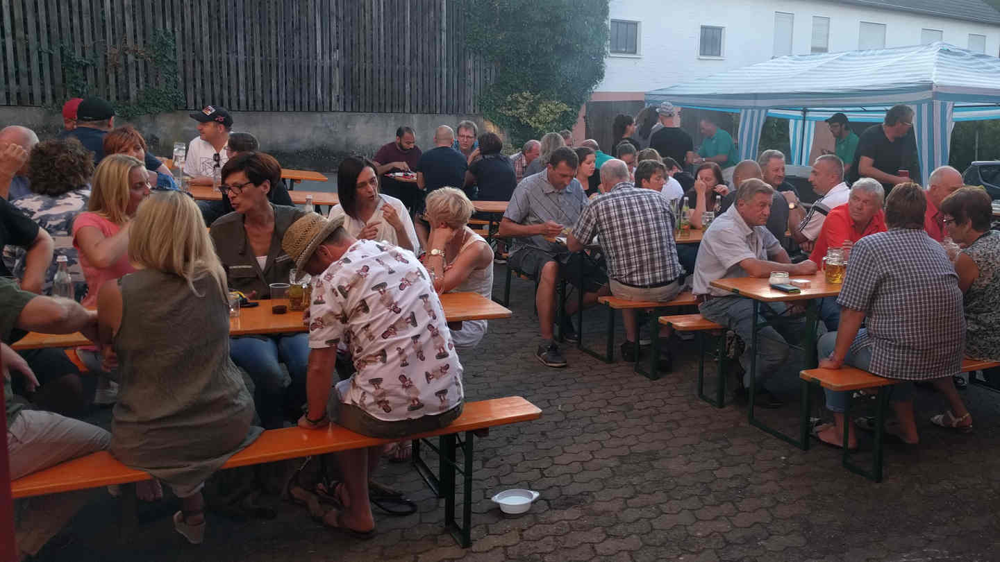
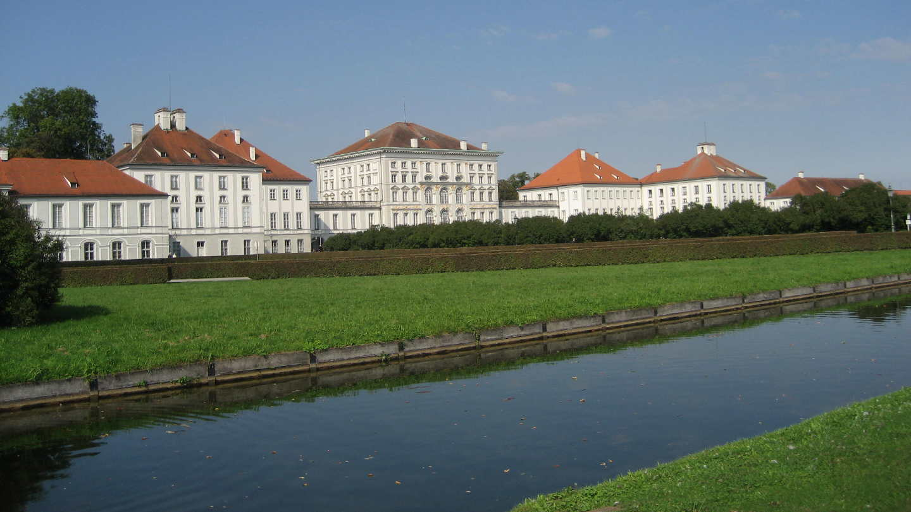
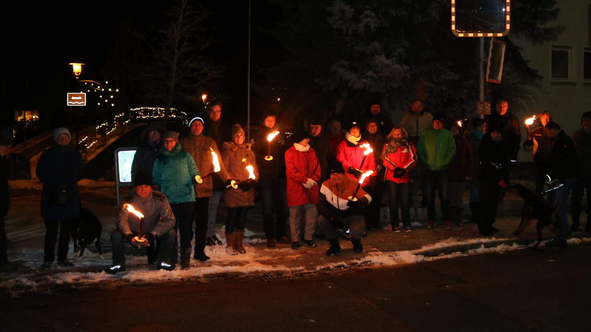

Jahreshauptversammlung ğŸ“
Unser Vereinsjahr beginnt mit der Jahreshauptversammlung, die üblicherweise beim Gasthaus
Gundel in Barthelmesaurach stattfindet. Neben festen Bestandteilen wie Berichten der
Vorstandschaft und des Kassenwarts, finden hier regelmäßig auch Ideen, Anregungen und Wünsche
ein offenes Ohr.

Maiwanderung ☀️
"Wenn die Sonne scheint am ersten Mai, dann ist der April vorbei!" - so lautet eine alte
Bauernregel, die nachgewiesenermaßen immer zutreffend ist. Um den grauen Winter hinter uns
zulassen, treffen wir uns jedes Jahr im Mai, um bei einer Wanderung die vielen Seiten
unseres Aurachtales und der Umgebung kennen zu lernen.

Grillfest 🥩
Was wäre ein Sommer, ohne ein Grillfest? Selbstverständlich wollen auch wir uns den würzigen
Duft von frischen Fischen, Steaks und Bratwürsten nicht entgehen lassen. Mit einer großen
Salatauswahl ist auch für Vegetarier etwas dabei. Und sollte dies immer noch nicht reichen,
gibt es am Abend Kaffee mit frischen selbstgebackenen Küchle dazu.

Überraschung ❓
So schön regelmäßige Veranstaltungen auch sind: Um das Jahr abwechslungsreich zu gestalten,
haben wir jedes Jahr eine Überraschungsfahrt dabei. Wohin es geht, verraten wir erst kurz
vorher. Damit bleibt das Vereinsleben immer spannend und unerwartet. Sei es eine Weinfahrt, ein
Besuch in der Gläsernen Scheune oder die Besichtigung des Hunderwasser-Turms - Hier ist
garantiert für jeden etwas dabei!

Irischer Abend 🇮🇪
Fest etabliert hat sich mittlerweile unser Irischer Abend. Bei allerlei irischen
Spezialitäten, etwa Guinnes und Kilkenny, Scones (Gebäck) sowie irischem Rindergulasch
veranstalten die G'selligen Aurachtaler einen Abend der ganz besonderen Art, während die Irish
Folk Band „Dreghoods“ den Gästen ordentlich einheizt.

Weihnachtsfeier 🎅
Unser Vereinsjahr endet mit einer gemütlichen Weihnachtsfeier. Während diese früher beim
Gasthaus Gundel mit vielen musikalischen Beiträgen stattfand, gehen die G'selligen Aurachtaler
im wahrsten Sinne derzeit neue Wege. So veranstalteten wir in den letzten Jahren beispielsweise
Fackelwanderungen im Dunkeln, um uns in Ruhe auf die besinnliche Zeit des Jahres
einzustellen.